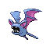

Назад
Зубат
Зубат — Покемон 1 поколения под номером 41 в Покедекс. Обитает он в регионе Канто и относится к Ядовитому и Летающему типу. В светлое время суток Зубат остаётся неподвижным в тёмном месте. Это происходит потому, что длительное пребывание на солнце вызывает легкие ожоги его тела.
Тип:
Ядовитый
Летающий
Эволюция

# 041 Зубат
=>
# 042 Голбат